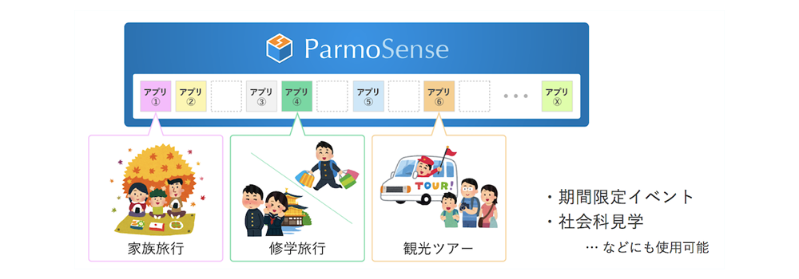
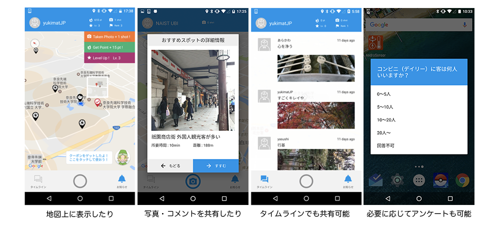
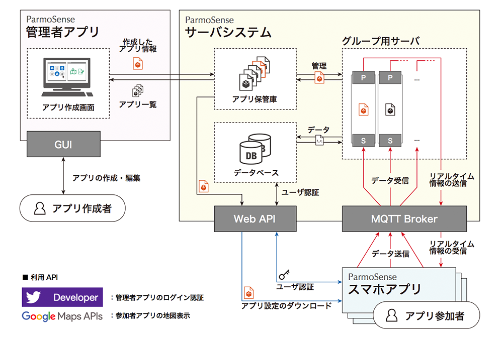
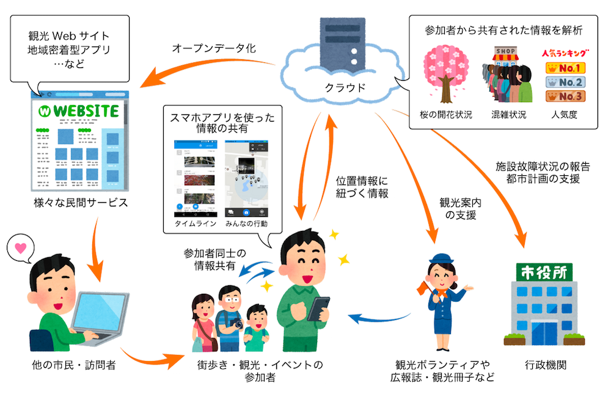

Overview概要
ParmoSenseは、街歩き・観光・地域イベントなどの参加者が、互いに「位置情報」に紐づく「情報」をリアルタイムに共有するためのプラットフォームです。
街の中で見つけた「気づき」を、写真やテキストでアップロードすることで、 他の参加者の “地図” や “タイムライン” へと共有することが可能です。
ParmoSenseは、街歩き・観光・地域イベントなどの参加者が、互いに「位置情報」に紐づく「情報」をリアルタイムに共有するためのプラットフォームです。
街の中で見つけた「気づき」を、写真やテキストでアップロードすることで、 他の参加者の “地図” や “タイムライン” へと共有することが可能です。
ParmoSense は、目的やイベントごとに “グループ＊1” を作ることができます
（グループごとに専用のアプリケーションが自動構築されます）。
色々なグループに参加するのに複数のアプリは必要ありません。
ユーザは「ParmoSense」スマホアプリをインストールし、
グループのQRコードを読み込むだけで、様々なグループに参加することができます。
また、ParmoSense を用いることで、同じグループに参加している人だけで情報共有したり、 期間限定のイベントで活用したり、共有範囲を自由に設定することが可能です。 
ParmoSense では、様々な方法で情報共有することが可能です。

また、ParmoSenseには、ゲーム要素も搭載しています。
バッジなどを収集したり、参加者同士で競ったり、
イベントに新しい「楽しみ」を付加することができます。
使い方は非常に簡単です。
より詳細なシステムの設計については、Research ページ を御覧ください。 
イベントの主催者は、管理者アプリ（Webアプリ）を介して、グループを作成することができます。
作成したグループのアプリ設定は、JSON形式に変換され、サーバシステムへと保管されます。
また、集めたデータを地図上や時系列に表示するヴィジュアライゼーション機能や、 データに情報を追加したり、不要な情報を削除したりするデータ処理機能を提供しています。
サーバシステムは、管理者アプリで作成されたグループごとに仮想的なグループ用サーバを自動的に構築します。
この仮想サーバは Python ベースの MQTT Server で、
クライアントアプリとの多対多のリアルタイム相互通信を実現しています。
また、QR コードが各グループごとに自動的に生成されます。 これをクライアントアプリで読み込むことで、仮想サーバとの接続を確立します。
クライアントアプリは、参加者が利用する唯一のアプリです。
サーバシステムから自動生成されるQR コードを読み込むことで、
グループごとのアプリ設定をダウンロードし、設定通りのアプリとして振る舞ってくれます（上述 How to Use の動画をご覧ください）。
このようなアプリケーションは、イベントごとにバラバラのアプリとして提供される事が多いですよね。 そのため、参加するユーザはイベント毎にアプリをインストールしなければならず「面倒だなぁ」と感じたり、 主催者はイベント毎にアプリを配信しなければならず、お互いに不幸になっているのです。
ParmoSense では、１つのスマホアプリで様々なイベントに参加可能なプラットフォームです。 ParmoSenseは既に、街歩きイベントから学術研究の実証実験、スタンプラリーなど多岐にわたるイベントにて、運用を行っています。
ParmoSense は、リアルタイムな情報共有にとどまらず、都市環境情報の整備（参加型センシングアプリ）や、マッピングパーティやFix My Streetといった地域活動を行うためのアプリとして活用できます。
収集したデータは、Web API 経由で、XMLやJSON、KMLなど、オープンデータとして利用可能な形式として出力可能です。
このオープンデータを利活用することで、様々な民間サービス（観光Webサイトや地域密着型の便利アプリなど）や、地域の観光案内の品質向上、行政に対する施設故障状況の報告などといったことが実現可能となります。
